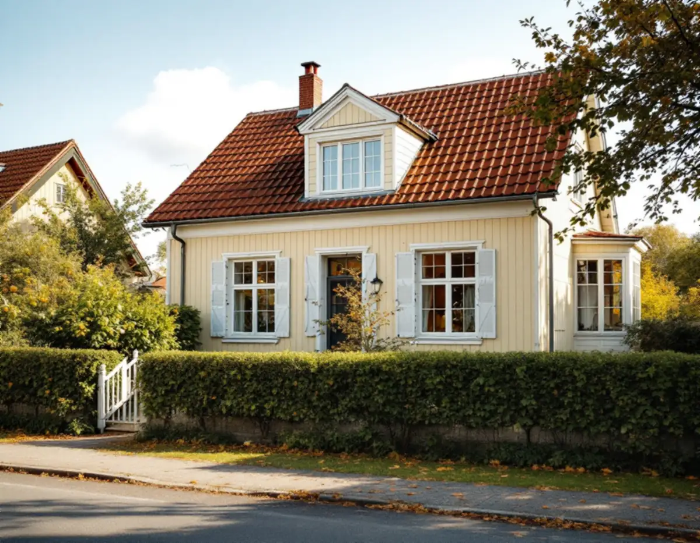
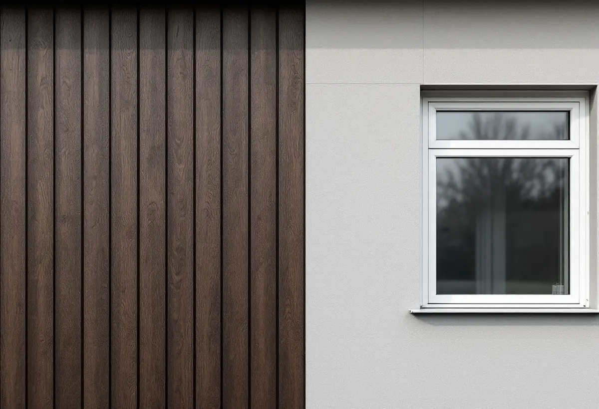

Husets historia
Vi tar reda på byggår, senare ombyggnader och hur väggen är uppbyggd.
Spånga rymmer både villastäderna som växte upp kring järnvägen och miljonprogrammets Tensta med sina gruppbyggda småhus. Fasaderna skiljer sig därefter: trä och puts i villastäderna, tegel, trä och skivor i radhusen. Geal Entreprenad AB renoverar fasader i Bromsten, Flysta, Solhem, Sundby, Tensta och övriga Spånga, med gratis platsbesök och skriftligt kostnadsförslag.

Stockholms stads strategi Varsam utveckling av småhus- och villaområden räknar Bromsten, Solhem, Flysta och Sundby till typen villastad. Den beskriver hur små stationssamhällen uppstod när järnvägen byggdes ut, och hur några av dem på 1910-talet blev municipalsamhällen med egen administration och beskattningsrätt, till exempel Spånga. Villastäderna var privat organiserade och fick en brokigare bebyggelse än de egnahemsområden som staden planerade.
Enligt strategin var trä det dominerande fasadmaterialet, även om puts förekom. Glasverandor, takkupor, snickarglädje och färgsättning gav husen den variation som syns än i dag. En av stadens vägledningar gäller direkt fasaden: karaktärsskapande material, kulörer, byggnadsdelar och detaljer ska tas tillvara eller återskapas i så stor utsträckning som möjligt vid ombyggnader och renoveringar.
Vi börjar därför med att ta reda på vad som är original. Under en senare beklädnad kan den gamla panelen finnas kvar, och snickerierna kring en veranda kan ofta lagas i stället för att bytas. Om kulörerna finns mer under målare i Spånga.

Strategin beskriver hur villastäderna har förtätats genom att tomter delats av, så att nya hus på tomter kring 600 kvadratmeter har kompletterat eller ersatt den äldre bebyggelsen. Radhus, parhus och mindre flerfamiljshus har tillkommit, och därför finns flera tidsepoker representerade längs samma gata.
Det påverkar renoveringen, eftersom ett yngre hus på en avstyckad tomt kan ha en helt annan vägg än grannens villa. Boverket varnar för träregelväggar som byggts med enstegstätade putssystem, där regn har tagit sig in och orsakat omfattande fuktskador. På en enstegstätad fasad finns bara en tätningsnivå mot regn, och vatten som kommer innanför kan bara torka ut genom långsamma processer.
På en äldre trävilla handlar det oftare om panel som har fuktats upp. Boverket påpekar att akrylatfärg på träpanel kräver en alkydoljegrundfärg, och att panel som målats utan den kunde fuktas upp kraftigt av regn. Vi gör därför ett skrapprov och bestämmer färgsystem innan panelen lagas. Taket på samma hus beskrivs under takrenovering i Spånga.
Tensta byggdes inom miljonprogrammet, och den första inflyttningen skedde 1967 enligt Stadsmuseets skrift om stadsdelen. Strategin räknar Tensta till de storskaliga stadsdelarna, där de gruppbyggda småhusen ofta har en blandning av fasadmaterial som tegel, trä och skivor, platta tak eller pulpettak och en färgsättning som är enhetlig inom varje husgrupp. Stadens områdesfakta för 2025 räknar 123 bostäder i småhus i Tensta, varav 119 äganderätter.
I många områden från den här tiden användes asbestcement, mer känt som eternit. Strategin konstaterar att skivorna i många fall har bytts ut och att det i dag finns fasadskivor utan asbest, så att radhusens uttryck kan behållas. Boverket bedömer att asbest sannolikt finns någonstans i hus byggda 1940–1980, och att bara provtagning och analys ger ett säkert svar.
Visar provet asbest ska skivorna rivas av ett företag som har tillstånd från Arbetsmiljöverket, och ansökan görs åtta veckor innan arbetet börjar. Eftersom färgsättningen är gemensam för husgruppen är det klokt att stämma av material och kulör med grannarna innan den nya fasaden beställs.
Stockholms stad räknar byte av kulör eller material på fasaden och tilläggsisolering som fasadändringar. För en- och tvåbostadshus krävs inte längre bygglov om vissa förutsättningar är uppfyllda, men utökad lovplikt gäller i särskilt kulturhistoriskt värdefulla byggnader och områden. Stadsmuseets klassificeringskarta ger en första indikation, och blå eller grön markering betyder att lov behövs.
Ligger huset på en streckad yta som ännu inte är inventerad kan lov ändå krävas. Stadsmuseet brukar svara inom tre veckor om du mejlar adress, byggnadsår, tidigare ombyggnader och foton av fasaderna. Hos staden kan man också beställa äldre miljöprogram och typritningssamlingar, som saknar juridisk status men beskriver områdets karaktär. Läs mer om material på sidan om fasadrenovering.
Vi tar reda på byggår, senare ombyggnader och hur väggen är uppbyggd.
Panel, puts eller skivor gås igenom, och vi gör skrapprov på färgen.
Äldre fasadskivor provas innan de tas ner.
Rivning, ny beklädnad, målning och anslutningar redovisas som egna poster.
Ny panel eller nya skivor monteras med luftspalt och tvåstegstätning vid fönstren.
Vi går runt huset tillsammans när arbetet är klart.
För ett småhus ger byte och reparation av fasader, fasadmålning och tilläggsisolering rotavdrag. Sanering av asbest i samband med byggarbetet ger också avdrag, men inte en mätning som görs för sig.
Avdraget är 30 procent av arbetskostnaden, högst 50 000 kr per person och år och högst 75 000 kr tillsammans med rutavdrag. Material och resor ingår inte. Geal drar avdraget direkt på fakturan.
Vilken beklädnad huset har i dag, om asbest måste saneras, hur mycket panel eller hur många skivor som ska bytas och om husgruppen ska ha samma material. En trävilla med glasveranda kräver mer snickeri än ett radhus. Efter ett gratis platsbesök får du ett skriftligt kostnadsförslag.
Puts, panel och tilläggsisolering.
Fasadrenovering i Stockholm →Takbyte, takbesiktning och plåtarbeten.
Takläggare i Spånga →Solhem, Bromsten, Flysta och Sundby.
Takrenovering i Spånga →Solhem, spåren och de stora tomterna.
Attefallshus i Spånga →Äldre villor, duschplats och bostadsanpassning.
Badrumsrenovering i Spånga →Riva och bygga nytt hus.
Byggföretag i Spånga →Bättra eller måla om hela villan.
Fasadmålning i Spånga →Villor, verandor och nya öppningar.
Fönsterbyte i Spånga →Villorna i Solhem.
Fönsterrenovering i Spånga →Massivt, lamell, fanér eller laminat.
Golvläggare i Spånga →Breda originalgolv och patina.
Golvslipning i Spånga →Solhem, villastäder och kök i flera lager.
Köksrenovering i Spånga →Solhems färgskala och villorna kring stationen.
Målare i Spånga →Villatak, rännor och stuprör.
Plåtslagare i Spånga →Väggar, vindar och verandor i villastäderna.
Snickare i Spånga →Solceller, radarn och Solhem.
Takbyte i Spånga →Tapet som passar husets tid.
Tapetsering i Spånga →Villastäderna, tomterna och gatan.
Tillbyggnad i Spånga →Villastäderna, stommen och ventilationen.
Totalrenovering i Spånga →